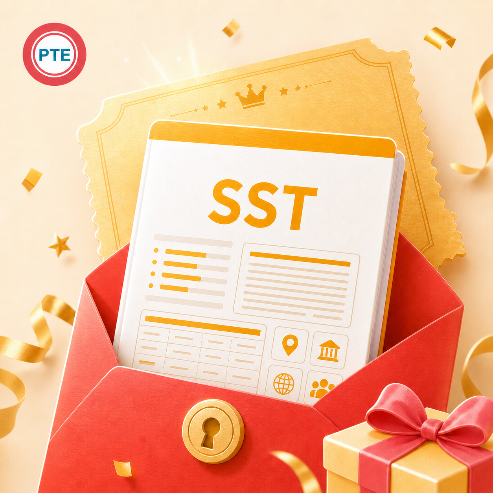

既要覆盖主旨与重点，也要避免塞入无关细节。
小圆 PTE 突击认真整理每一个得分点
SST 专项Summarize Spoken Text · 听力总结
恭喜宝宝，找到 SST 记忆捷径！
听懂了却写不出？关键词抓不全、摘要容易散？这份资料把完整答案、关键词高亮、中文理解、图标提示、音标和翻译整合起来，让“听—记—写”有一条清晰路线。
纯 PDF 图文高频题目答案关键词中文图标记忆音标 + 翻译

先看清这道题
听一段内容，提炼成 50–70 词摘要。
SST 同时考查听力与写作。你需要从讲座中抓住主旨与必要支撑点，再在规定时间内写成精炼摘要；内容、格式、语法、词汇和拼写都影响表现。
听完后组织信息、写作并留出时间检查。
能听出层次，也要用准确、连贯的英语重新表达。
真实截图
SST 资料内页展示
完整答案、关键词高亮、中文图标理解及关键词表的实际排版。

本商品仅提供 PDF 图文资料，不包含音频、视频、录音或听力播放服务。
资料长这样
关键词先亮出来，
再把整段内容串起来。
参考商品资料页的 Welsh Speaker 示例：英文答案突出关键词，中文速记用图标串联，同时补充关键词音标与翻译。
Welsh · Celtic · 20th century · 2001 census · 750,000
英文答案 重点信息高亮，快速看清摘要骨架
中文理解 图标串联人物、时间、数字与动作
关键词表 单词 + 音标 + 中文释义
复述检查 主旨、支撑点、语法、拼写逐项核对
- 抓先抓主旨与关键节点
人物、时间、数据、变化与结论更容易被看见。 - 懂中文速记辅助理解
先建立内容逻辑，再转换成英文摘要。 - 背关键词配音标翻译
降低陌生词对听力和拼写的双重干扰。 - 写完整答案可对照
学习如何删减细节、连接信息并控制字数。
为什么适合突击
把一大段音频，压缩成能记住的几个锚点。
高亮和图标让信息层级更清楚，复习时一眼找到得分内容。
先确认逻辑，再练英文表达，减少只背句子却不懂内容。
对照关键词检查遗漏，对照完整答案学习摘要组织方式。
建议这样冲
每题做三遍，主旨和细节一起稳。
第 1 遍
只看关键词，讲清中文逻辑
先确认谁、做了什么、发生了怎样的变化，以及最终结论。
第 2 遍
遮住答案，用关键词写摘要
控制在目标词数范围，优先保留主旨和必要支撑点。
第 3 遍
对照修正语法与拼写
记录重复出现的错误，第二天只复习错词和漏点。
购买后如何领取
安全验证，生成你的专属 PDF。
购买后进入 SST 领取链接，系统按商品入口生成专属文件。
填写中国大陆手机号
获取并输入短信验证码，确认是你本人领取。
填写小红书订单号
订单号格式为 P 开头加 18 位数字，请从订单详情复制。
生成专属水印文件
系统为资料每一页加入完整手机号与“祝考试好运 UPUP”水印。
下载并及时保存
生成成功页会显示具体北京时间，建议在生成后 14 天内完成下载。
为生成和保护你的专属资料，系统会保存手机号和订单号，并在资料每一页添加完整手机号水印。题库按当前资料版本整理，实际考试题目以考场为准。
抓住重点，
摘要就不再散。
如果觉得有用，就拿下吧！早用一天，多背亿点！有任何问题欢迎联系小圆——助力每个突击 PTE 的小伙伴实现梦想～
拿下 SST 宝藏资料